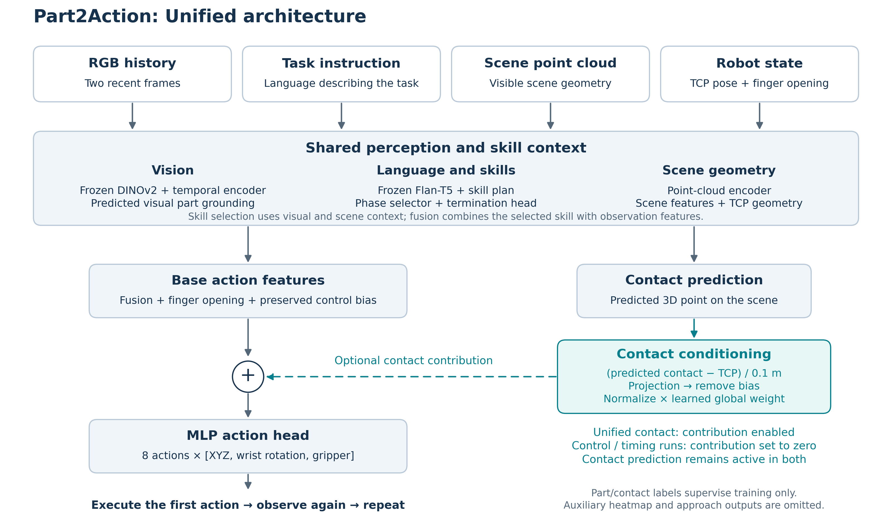
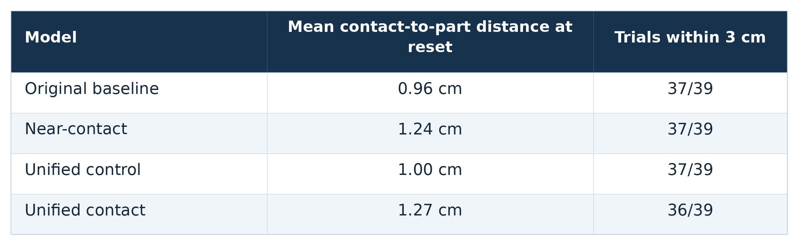
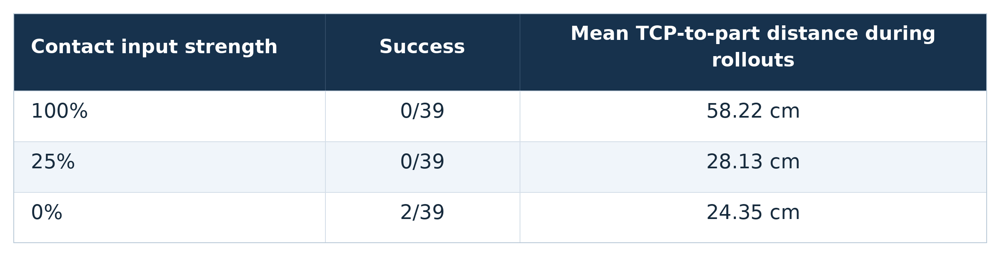
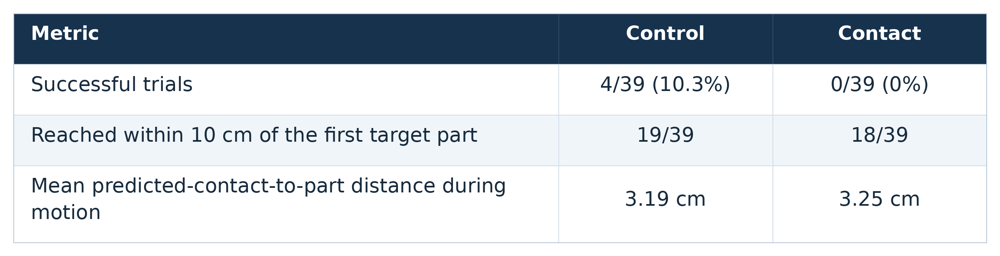
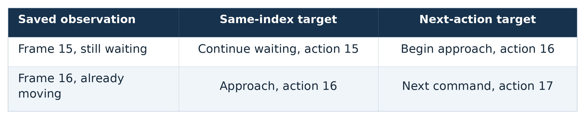
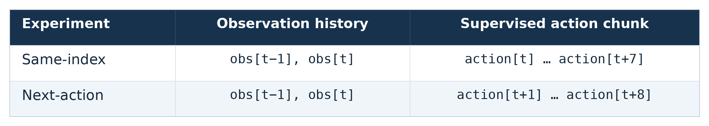
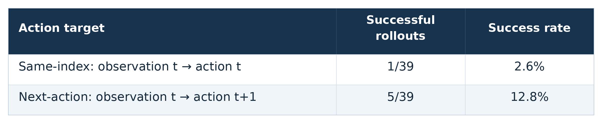

Part2Action 2026-10-12 slide media
Download each GIF, table, or diagram for its slide, or download the complete portable bundle.
View PNG tables · Download all media · Source provenance and slide mapping
Expert reference is leftmost in model comparisons. Task-matched references may have different source episodes and initial scenes. Playback follows nominal elapsed sample index, not task phase. Earlier finishes hold their final frame.
Architecture diagram
Slide 1 — Unified architecture
Simplified forward dataflow for the current two-frame unified MLP. The teal contact contribution is enabled for normalized unified contact and disabled for unified control and timing runs. The skill hierarchy, visual part grounding and contact prediction remain active.

Download PNG · Download editable SVG
Slide 1 — Project illustration
Expert demonstration, not a learned policy. Cyan: derived contact target; yellow: recorded TCP/path; green: dataset target part.
Panels: Expert demonstration

Download GIF · 0.9 MiB · 600×400
Slide 2 — Original contact predictions
Original 30-epoch policies with blue predicted contacts and green nearest true-part points. One illustrative trial; the slide table summarizes 39 initial observations. Expert reference: demo_263, source episode 80066; task_matched_reference.
Panels: Ground-truth reference | Original control | Original contact

Download GIF · 3.9 MiB · 1440×720
Slide 3 — Contact input strength
Same trained checkpoint with three contact-input strengths. All three policies fail this bottle trial; approach behavior differs. The slide table reports all 39 trials. Expert reference: demo_263, source episode 80066; task_matched_reference.
Panels: Ground-truth reference | Contact 100% | Contact 25% | Contact 0%

Download GIF · 5.4 MiB · 1920×720
Slide 4 — Normalized control versus contact
Mug grasp: control succeeds and contact fails in this trial. This individual example illustrates the 4/39 versus 0/39 comparison. Expert is a task-matched demonstration from a different episode. Expert reference: demo_1821, source episode 90545; task_matched_reference.
Panels: Ground-truth reference | Unified control | Unified contact

Download GIF · 3.7 MiB · 1440×720
Slide 4 — Stalled touch motion
Mug touch, not grasp. Both policies remain near their starting pose. This does not establish gripper closure as the cause. Expert is a task-matched demonstration from a different episode. Expert reference: demo_1544, source episode 90896; task_matched_reference.
Panels: Ground-truth reference | Unified control | Unified contact

Download GIF · 3.0 MiB · 1440×720
Slide 5 — Training-label timing
All three panels show the same expert RGB. The labels compare current-action and next-action targets; these are not predicted-policy rollouts.
Panels: Recorded expert frame | Same-index label | Next-action candidate

Download GIF · 2.3 MiB · 1440×650
Slide 6 — Same-index versus next-action pilot
Same-index fails and next-action succeeds in this example. Both are contact-disabled MLP continuations; expert is a task-matched reference. Expert reference: demo_75, source episode 91092; task_matched_reference.
Panels: Ground-truth reference | same_index | next_action

Download GIF · 4.6 MiB · 1440×720
Table images
Slide 2 — Contact localization table
Exact table values from the slide document. High-resolution PNG with a white background.

Download PNG · 2400×738
Slide 3 — Contact strength table
Exact table values from the slide document. High-resolution PNG with a white background.

Download PNG · 2400×616
Slide 4 — Normalized policy results table
Exact table values from the slide document. High-resolution PNG with a white background.

Download PNG · 2400×616
Slide 5 — Recording order example table
Exact table values from the slide document. High-resolution PNG with a white background.

Download PNG · 2400×494
Slide 5 — Action alignment table
Exact table values from the slide document. High-resolution PNG with a white background.

Download PNG · 2400×430
Slide 6 — Timing pilot results table
Exact table values from the slide document. High-resolution PNG with a white background.

Download PNG · 2400×494